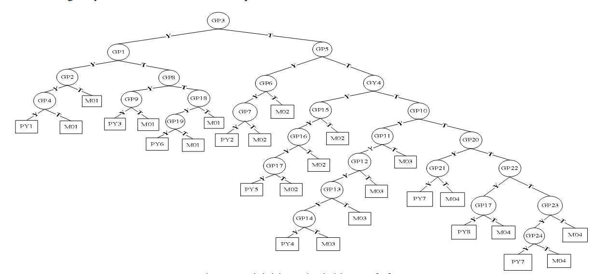

Pohon Keputusan (Decision Tree)
Visualisasi alur pelacakan Forward Chaining berdasarkan Figure 4 pada Jurnal IJASEIT.

Keterangan Node:
- GP (01-24): Gejala Penyakit (Symptom)
- PY (01-09): Kode Penyakit (Disease)
- Y / T: Keputusan Ya / Tidak